(1) 在完成安裝完Sublime後，點選開啟執行按cmd後輸入node -v，查看是否有出現版本號，有就代表安裝成功
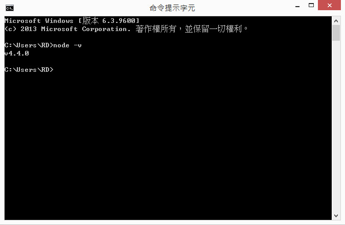(2)針對windows系統需設定sublime路徑及自動排版功能
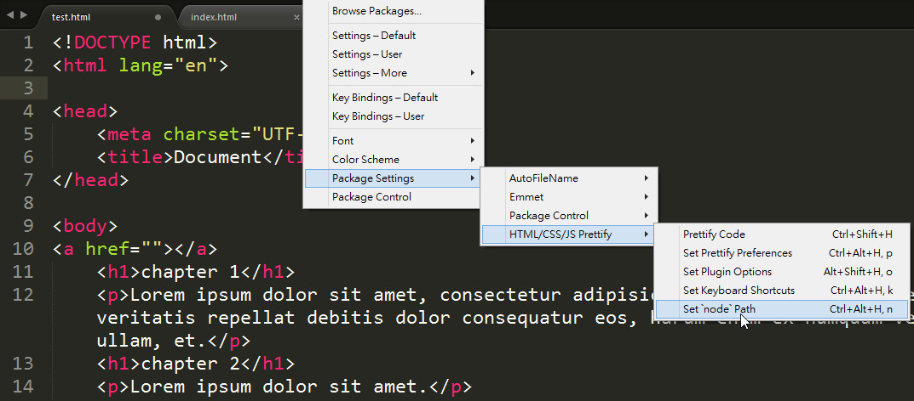(3)將windows改為node,format_on_save 改為True
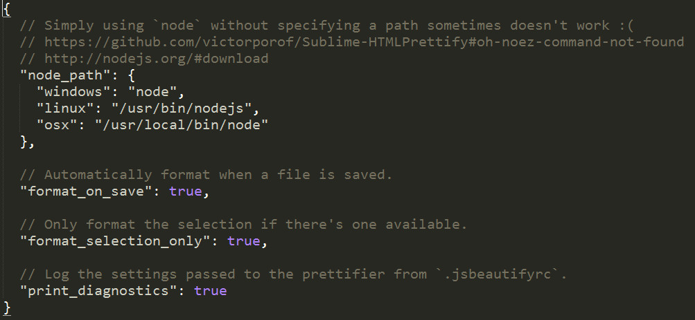(4)接著安裝強大的外掛，按Ctrl+Shift+P，按pci
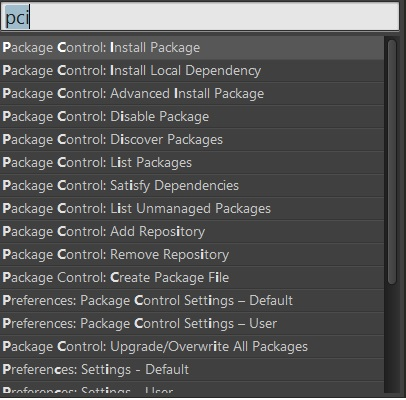(5)輸入需安裝的外掛，像是AutoFileName, Emmet 都是非常強大好用的工具
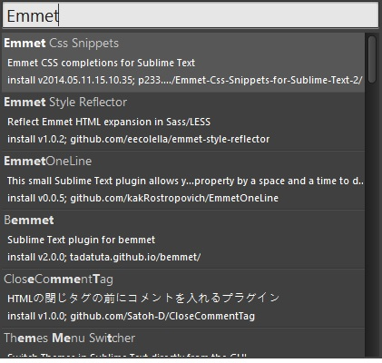(1)輸入html:5→按Tab,就能快速產生html5基本架構
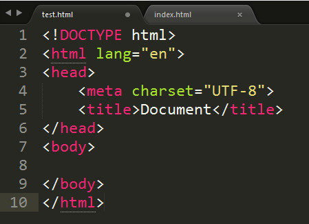(2)輸入html>head+body→按Tab,產生出+為上下關係，+為左右平行的架構
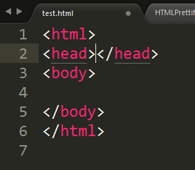(3)輸入h1*4→按Tab,快速產生Tag
輸入(h1+p)*4→按Tab,快速產生Tag
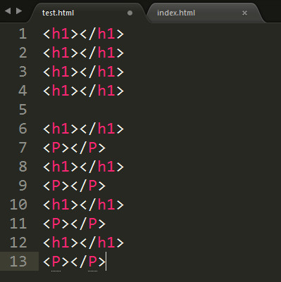(4)利用 {}和$字號，(h1{chapter $}+p)*4→按Tab，自動快速排序
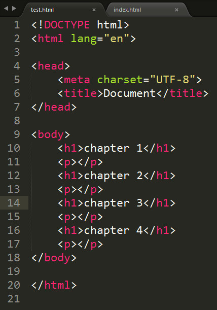(5)輸入Lorem→按Tab，自動快速產生垃圾字串
.輸入Lorem5→按Tab，自動快速產生5個垃圾字串
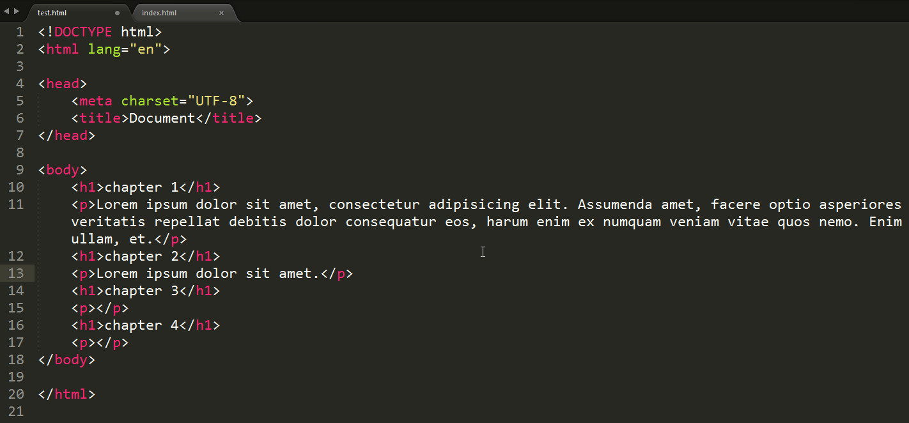使用超連結時，AutoFileName會自動列出選單給你選，非常的好用!
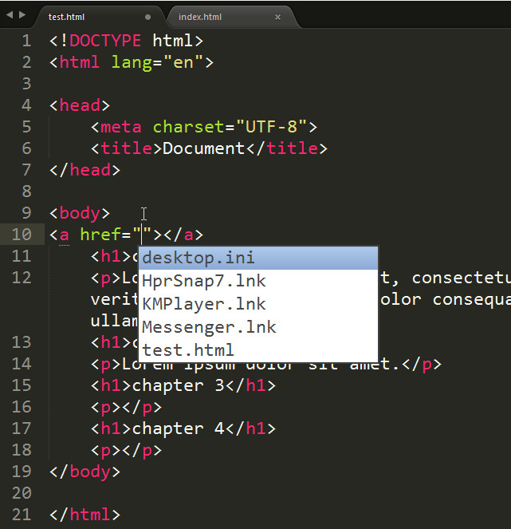